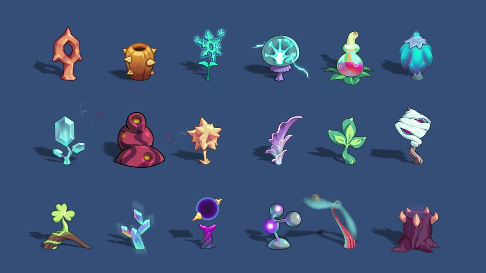
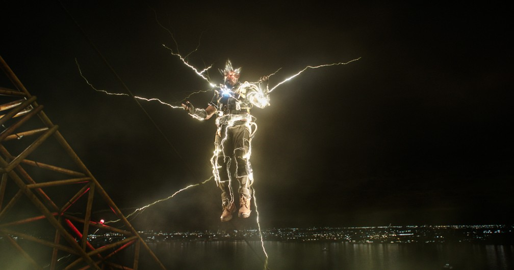
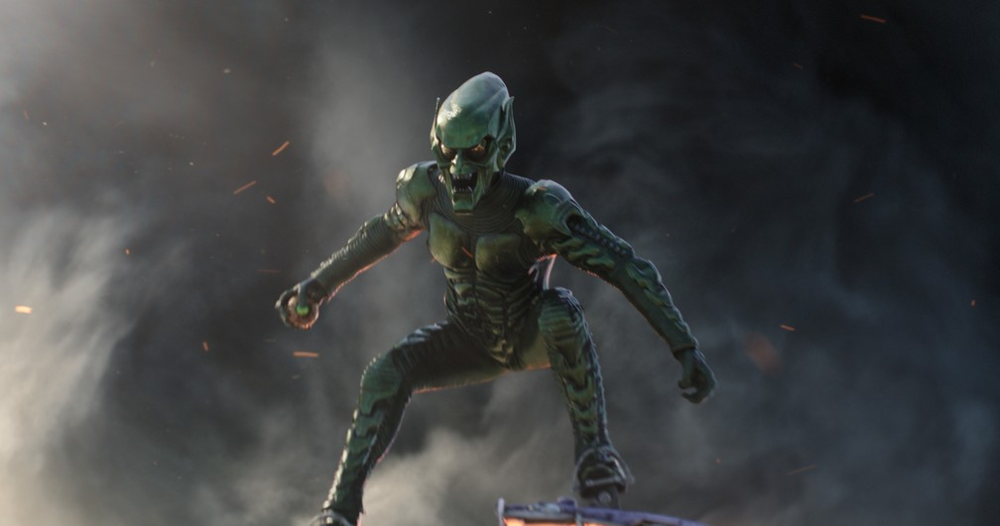
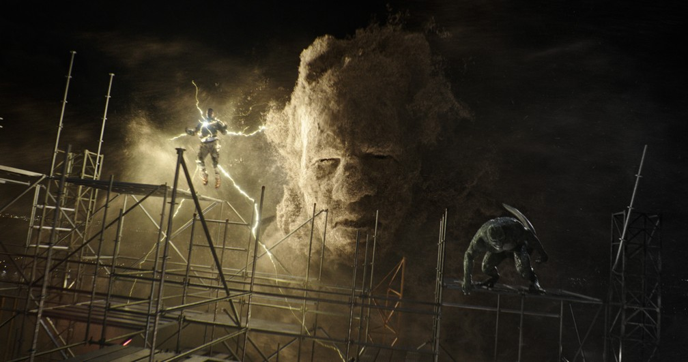
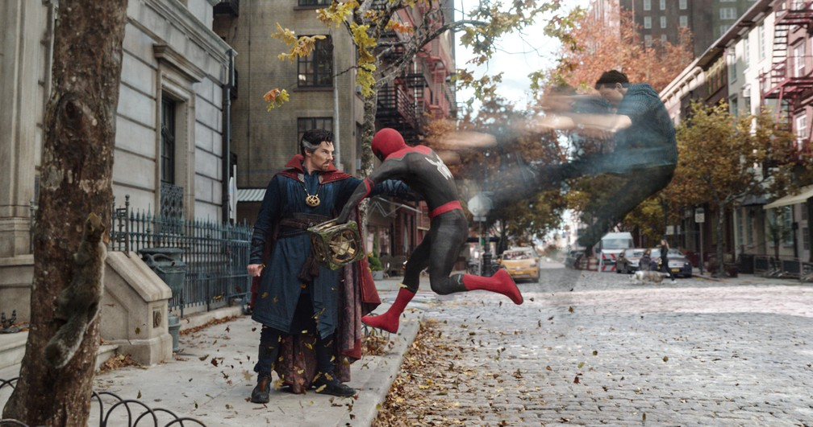

×
Terceiro filme do herói estrelado por Tom Holland tem estreia prevista para 16 de dezembro nos cinemas brasileiros.
")
Dirigido mais uma vez por Jon Watts, responsável por "De volta ao lar" (2017) e "Longe de casa" (2019), a aventura vai reunir novamente o herói do título com o Doutor Estranho (Benedict Cumberbatch).
Com uma história que envolve outras versões do universo Marvel, "Sem volta para casa" conta com o retorno de Alfred Molina, que interpretou o vilão doutor Octopus em "Homem-Aranha 2" (2004), já confirmado no primeiro trailer.
A nova prévia mostra o retorno de Jamie Foxx, que deu vida a Electro em "O espetacular Homem-Aranha 2: A ameaça de Electro" (2014), e de outros vilões, como Duende Verde, Lagarto e Homem-Areia.
Na prática, os ganhos obtidos a cada partida podem servir para outras transações financeiras. Quer saber por onde começar? Preparamos um guia que mostra como ganhar dinheiro jogando ‘Plant vs. Undead’.



